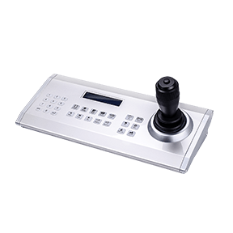

|  | USB Joystick Model: AJ-002 |
| Joystick |
3-axis +1 key X/Y/Z for positioning control Joystick travel: X/Y axes +/-20, Z axis +/-30 Optical sensors High-precision |
| Buttons |
28 imported ALPS button, two-color backlight, brightness adjustable |
| Display | LCD, 2 lines, 20 characters, blue backlight |
| Housing |
Enclosure Aluminum alloy, side ABS plastic Joystick: Aluminum + ABS |
| Power |
Power Adapter: AC100-240V-12VDC/1000mA Power Consumption: 2.7W |
| Interface | USB Port |
| Connectors | USB 2.0 (USB Type A Male) |
| Supported OS | Windows 7/8/10 with plug n play |
| Supported Platform | VIVOTEK VAST |
| Operating Temperature | -10°C ~ 70°C (14°F ~ 158°F) |
| Weight | 1.47 kg |
| Dimensions | 355(L) × 150(W) × 155(H) mm |
 |
|